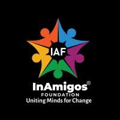

InAmigos Foundation is dedicated to creating awareness, supporting communities, and inspiring youth through meaningful social initiatives and volunteer programs.
InAmigos Foundation is a non-governmental organization focused on social awareness, youth empowerment, education support, and community-driven initiatives. Through volunteering activities, campaigns, and awareness programs, the organization encourages positive social change and active participation from young people.
Supporting students through educational awareness, guidance programs, and learning opportunities.
Organizing awareness initiatives and social campaigns to create positive impact within communities.
Encouraging youth participation in volunteering, teamwork, and social responsibility programs.
Volunteers Connected
Community Campaigns
Lives Impacted
Our mission is to inspire people to contribute towards society through awareness programs, volunteering activities, and social development initiatives that create meaningful change.
Join our mission to empower communities, spread awareness, and inspire positive social impact through collective action.
Follow InAmigos Foundation on social platforms and support awareness initiatives, volunteering activities, and community programs.